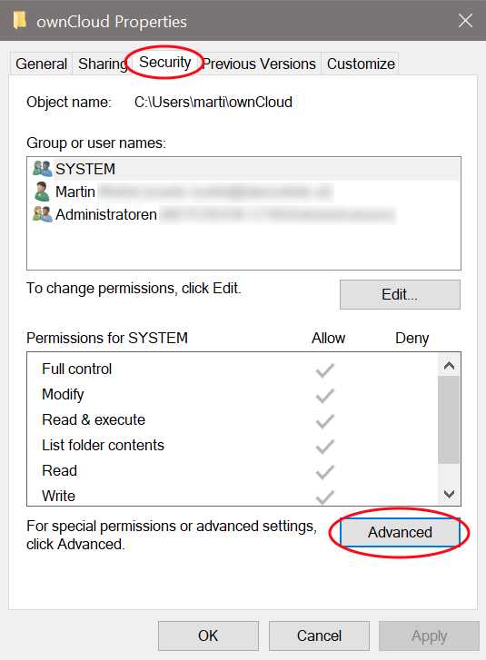
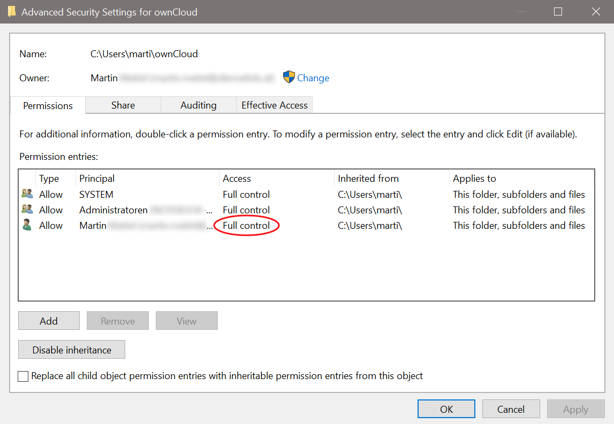
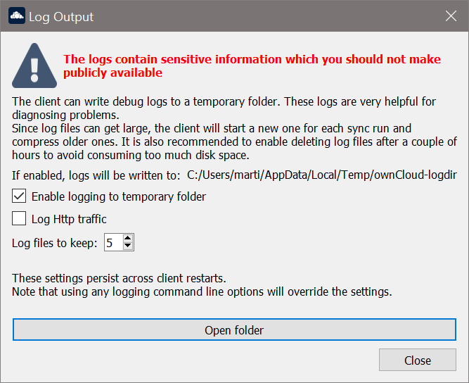
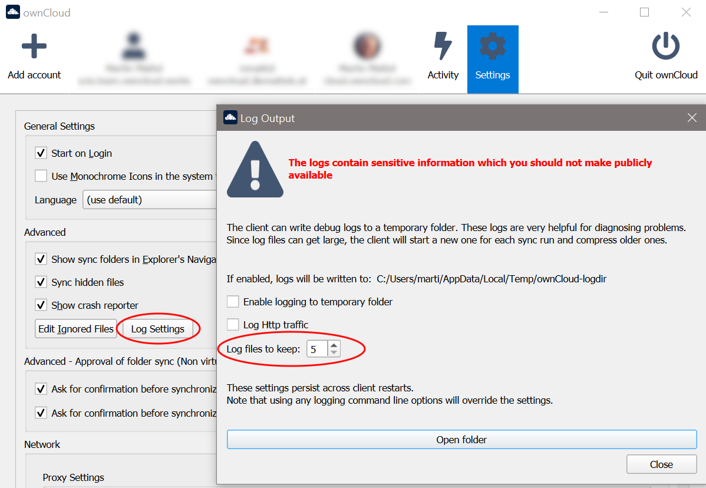
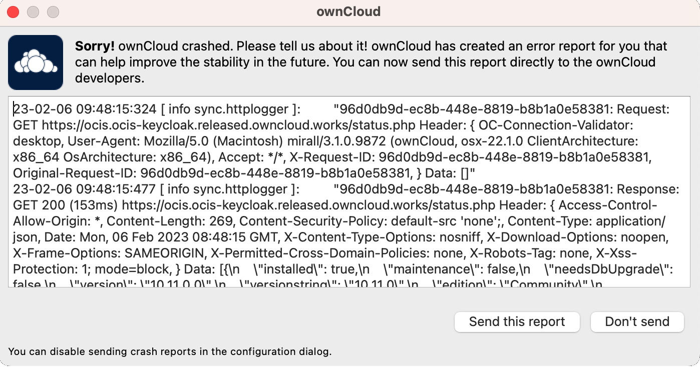

Appendix Troubleshooting
Introduction
When reporting bugs, it is helpful if you first determine what part of the system is causing the issue.
The following two general issues can result in failed synchronization:
-
The instance setup is incorrect.
-
The Desktop App contains a bug.
Identifying Basic Functionality Problems
- Performing a general ownCloud Server test
-
The first step in troubleshooting synchronization issues is to verify that you can log on to the ownCloud web application. To verify connectivity to the ownCloud server try logging in via your Web browser. If you are not prompted for your username and password, or if a red warning box appears on the page, your server setup requires modification. Please verify that your server installation is working correctly.
- Ensure the WebDAV API is working
-
If all Desktop Apps fail to connect to the ownCloud Server, but access using the Web interface functions properly, the problem is often a misconfiguration of the WebDAV API. The ownCloud Desktop App uses the built-in WebDAV access of the server content. Verify that you can log on to ownCloud’s WebDAV server. To verify connectivity with the ownCloud WebDAV server, open a browser window and enter the address to the ownCloud WebDAV server. For example, if your ownCloud instance is installed at
https://yourserver.com/owncloud, your WebDAV server address ishttps://yourserver.com/owncloud/remote.php/webdav. If you are prompted for your username and password but, after providing the correct credentials, authentication fails, please ensure that your authentication backend is configured properly. - Use a WebDAV command line tool to test
-
A more sophisticated test method for troubleshooting synchronization issues is to use a WebDAV command line client and log into the ownCloud WebDAV server. One such command line client — called
cadaver— is available for Linux distributions. You can use this application to further verify that the WebDAV server is running properly using PROPFIND calls. As an example, after installing thecadaverapp, you can issue thepropgetcommand to obtain various properties pertaining to the current directory and also verify WebDAV server connection.
Directory Modification Time
| ownCloud does not preserve the mtime (modification time) of directories, though it does update the mtimes on files. |
CSync Unknown Error
If you see this error message stop your Desktop App, delete the ._sync_xxxxxxx.db file, and then restart your Desktop App. There is a hidden ._sync_xxxxxxx.db file inside the folder of every account configured on your Desktop App.
| Please note that this will also erase some of your settings about which files to download. |
Error Updating Metadata Access Denied
There are very rare cases when using Windows and VFS, where the Desktop app complains about denied access. The log contains the following message, including the source file for reference:
"WindowsError: ffffffff80070005: Access is denied."This can happen if the standard permissions of the folder where the synced data resides has been changed for the owning user. To resolve this issue, the owning user needs Full Control. See the example images below how this should look like. You can get there by :
 |
 |
If the permission is not set to Full Control, you can either correct it or ask your administrator for support.
Isolating Other Issues
Other issues can affect synchronization of your ownCloud files:
-
If you find that the results of the synchronizations are unreliable, please ensure that the folder to which you are synchronizing is not shared with other synchronization applications.
-
Synchronizing the same directory with ownCloud and other synchronization software such as Unison, rsync, Microsoft Windows Offline Folders, or other cloud services such as Dropbox or Microsoft SkyDrive is not supported and should not be attempted. In the worst case, it is possible that synchronizing folders or files using ownCloud and other synchronization software or services can result in data loss.
-
If you find that only specific files are not synchronized, the synchronization protocol might be having an effect. Some files are automatically ignored because they are system files, other files might be ignored because their filename contains characters that are not supported on certain file systems. For more detailed information see the Ignored Files section.
-
If you are operating your own server, and use the local storage backend (the default), make sure that ownCloud has exclusive access to the directory.
|
The data directory on the server is exclusive to ownCloud and must not be modified manually.
|
Log Files
Effectively debugging software requires as much relevant information as can be obtained. To assist the ownCloud support personnel, please try to provide as many relevant logs as possible. Log output can help with tracking down problems and, if you report a bug, log output can help to resolve an issue more quickly.
The Desktop App log file is often the most helpful log to provide.
Obtaining the Desktop App Log File
There are several ways to produce log files. The most commonly useful is enabling logging to a temporary directory, described first.
|
Desktop App log files contain file and folder names, metadata, server URLs and other private information. Only upload them if you are comfortable sharing the information. Logs are often essential for tracking down a problem though, so please consider providing them to developers privately. |
Logging to a Temporary Directory
-
Open the ownCloud Desktop App.
-
Either
click or
press F12 or Ctrl-L or Cmd+L on your keyboard.The Log Output window opens.

-
Enable the Enable logging to temporary folder checkbox.
-
Later, to find the log files, click the Open folder button.
-
Select the logs for the time frame in which the issue occurred.
| That the choice to enable logging will be persisted across Desktop App restarts. |
Log HTTP Requests and Responses
When HTTP logging is enabled, log files will contain additional entries:
23-09-01 16:31:14:031 [ info sync.httplogger ]: "eca37889-6dea-42cf-81a2-c3826efbf146: Request: GET https://cloud.example…
23-09-01 16:31:14:143 [ info sync.httplogger ]: "eca37889-6dea-42cf-81a2-c3826efbf146: Response: GET 200 (112ms) https://cloud.example…| Log Content | Description |
|---|---|
|
Timestamp |
|
Log item category label |
|
|
|
List of all HTTP headers |
|
HTTP bodies (JSON, XML) |
|
Duration of the response (since the request was sent) |
The ownCloud desktop app sends the X-REQUEST-ID header with every request. You’ll find the X-REQUEST-ID in the owncloud.log, and you can configure your web server to add the X-REQUEST-ID to the logs. Here you can find more information at Request Tracing.
Saving Files Directly
The ownCloud Desktop App allows you to save log files directly to a custom file or directory. This is a useful option for easily reproducible problems, as well as for cases where you want logs to be saved to a different location. To do so, you can start the Desktop app with startup flags.
To save log files to a file or a directory:
-
The
--logfile <file>flag forces the Desktop app to save the log to a file, where<file>is the filename to which you want to save the file. -
The
--logdir <dir>flag forces the Desktop app to save the log into the specified directory, where<dir>is an existing directory. Note that each sync run creates a new file. -
When adding the
--logdebugflag to any of the flags above, the verbosity of the generated log files increases. -
To limit the number of log files created, use the general setting by:
clicking or
press F12 or Ctrl-L or Cmd+L on your keyboard.
As an example, write logs to a defined directory with increased verbosity using Linux:
owncloud --logdir /tmp/owncloud_logs --logdebugLogging in the Console
If the ownCloud Desktop App isn’t able to start and immediately crashes the first two options are not available. Therefore, it might be necessary to start the ownCloud Desktop App using the command line in order to see the error message
On Linux and Mac simply open the terminal and run:
owncloud --logfile - --logflushOn Windows open a PowerShell and run the following command:
& 'C:\Program Files\ownCloud\owncloud.exe' --logfile - --logflushMake sure to copy the whole command and adjust the path to your owncloud.exe, if you have chosen to install the Desktop App in a different path.
To further increase the verbosity of the output you can also combine these commands with the following argument:
--logdebugControl Log Content
Thanks to the Qt framework, logging can be controlled at run-time through the QT_LOGGING_RULES environment variable.
Exclude log item categories
QT_LOGGING_RULES='gui.socketapi=false;sync.database*=false' \
/PATH/TO/CLIENT \
--logdebug --logfile <file>Add HTTP logging entries
QT_LOGGING_RULES='sync.httplogger=true' \
/PATH/TO/CLIENT \
--logdebug --logfile <file>Only show specific log item categories
QT_LOGGING_RULES='*=false;sync.httplogger=true' \
/PATH/TO/CLIENT \
--logdebug --logfile <file>Installer Log Files
Windows Installer Logging
In case you experience issues, you can run the installer with logging enabled:
msiexec /i ownCloud-4.1.0.11250.x64.msi /L*V "C:\log\example.log"See the: How do I create an installation log documentation for more information about the msiexec.exe command and logging.
ownCloud Server Log File
The ownCloud server also maintains an ownCloud specific log file. This log file must be enabled through the ownCloud Administration page. On that page, you can adjust the log level. We recommend that when setting the log file level that you set it to a verbose level like Debug or Info.
You can view the server log file using the web interface or you can open it directly from the file system in the ownCloud server data directory.
Need more information on this. How is the log file accessed? Need to explore procedural steps in access and in saving this file, similar to how the log file is managed for the Desktop App. Perhaps it is detailed in the Admin Guide and a link should be provided from here. I will look into that when I begin heavily editing the Admin Guide.
Webserver Log Files
It can be helpful to view your webserver’s error log file to isolate any ownCloud-related problems. For Apache on Linux, the error logs are typically located in the /var/log/apache2 directory. Some helpful files include the following:
-
error_log— Maintains errors associated with PHP code. -
access_log— Typically records all requests handled by the server; very useful as a debugging tool because the log line contains information specific to each request and its result.
Here you can find more information about Apache logging.
Crash Reports
It may happen that the Desktop App unexpectedly crashes due to unforeseen or unhandled circumstances. In such a case, a crash report is generated. This report contains valuable information for ownCloud to debug the root cause. This report is not sent to ownCloud automatically by the Desktop app, the user has to confirm to do so. If users agree to send the crash report, they get a reference ID that can be used in communication with ownCloud for this issue.
Crash reports are available for the following environments:
-
Windows
-
Mac (currently x64 only)
-
Linux packages
-
Linux AppImage
The following table shows a crash report window before and after it has been sent.
| Crash Report Created | Crash Report Sent |
|---|---|
 |
|

Core Dumps
On macOS and Linux systems, and in the unlikely event the Desktop App software crashes, the Desktop App is able to write a core dump file. Obtaining a core dump file can assist ownCloud Customer Support tremendously in the debugging process.
To enable the writing of core dump files, you must define the OWNCLOUD_CORE_DUMP environment variable on the system.
For example:
OWNCLOUD_CORE_DUMP=1 owncloud
This command starts the Desktop App with core dumping enabled and saves the files in the current working directory.
|
Core dump files can be fairly large. Before enabling core dumps on your system, ensure that you have enough disk space to accommodate these files. Also, due to their size, we strongly recommend that you properly compress any core dump files prior to sending them to ownCloud Customer Support. |